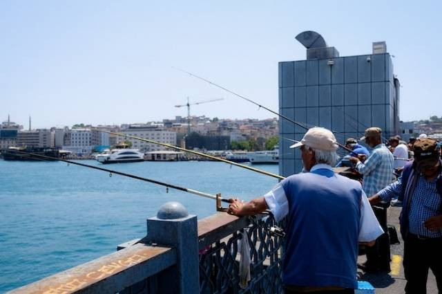
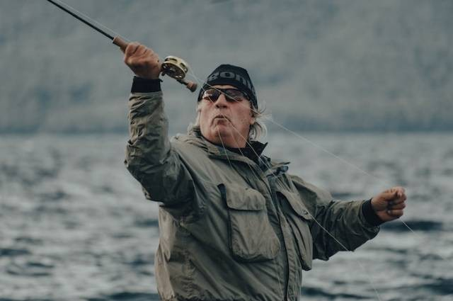

Cara Memancing di Kolam Pemancingan untuk Pemula Anti Gagal

Di penjelasan kali ini, kamu bisa mengetahui tata cara memancing di kolam pemancingan yang lebih mudah. Apalagi bagi para pemancing, ini merupakan cara yang tidak boleh dilewatkan.
Mengingat memancing ikan di kolam pemancingan ternyata tidak semudah yang dibayangkan. Tidak mungkin kan kamu sudah banyak tiket masuk kolam pemancingan namun tidak dapat apa-apa.
Maka, kamu perlu menyimak penjelasan berikut ini untuk mengetahui cara cepat dapat ikan saat memancing ikan di kolam pemancingan.
Cara Memancing di Kolam Pemancingan

Berdasarkan buku 80 Bisnis Laris Balik Modal < 1 Tahun karya Alistiorini, Bambang Suharno, ini dia beberapa cara memancing ikan di kolam pemancingan yang tepat.
1. Pilih Reel dan Joran yang Berkualitas
Untuk bisa mendapatkan hasil yang banyak, kamu harus memilih komponen reel dan joran yang berkualitas. Pilih reel dan joran berkekuatan sedang dengan panjang 2 meter.
Ketentuan ini berlaku untuk memancing ikan yang ukurannya tidak terlalu besar. Namun, jika kamu memiliki tubuh yang tinggi, maka wajib memiliki reel dan joran yang ukurannya lebih panjang dari tubuh kamu.
2. Pilih Senar Pancing Terbaik
Selanjutnya kamu perlu memilih senar pancing yang tepat sesuai dengan kebutuhan. Untuk lebih detailnya, kamu bisa bertanya langsung kepada penjual peralatan pancing ketika membeli nanti.
3. Gunakan Umpan yang Sesuai
Salah satu hal yang tidak boleh kamu lewatkan adalah menggunakan umpan yang sesuai. Kamu bisa menggunakan umpan berupa jangkrik, roti, cacing atau bakwan sesuai dengan jenis ikan yang akan kamu pancing.
4. Tambahkan Pelampung Pancing
Karena kolam cenderung memiliki air yang tenang, maka ada baiknya jika kamu juga menambahkan pelampung pancing. Sehingga pelampung ini akan mencegah agar umpan tidak tenggelam ke dasar kolam.
Bukan hanya itu saja, namun keberadaan pelampung juga sangat membantu kamu nantinya. Ketika mendapatkan ikan, dapat ditandai dengan pelampung yang bergerak-gerak.
5. Rekatkan Umpan di Kail
Jika semua peralatan sudah siap, langkah selanjutnya adalah merekatkan umpan pada kali hingga benar-benar menempel. Pastikan umpan tersebut sudah kuat dan tidak mudah lepas.
6. Masukkan Kail ke Kolam Pemancingan
Lanjut dengan memasukkan kail ke kolam pemancingan dan tunggu hingga umpan dimakan ikan. Jika sudah dimakan dan pelampung bergerak-gerak, segera hentakkan joran dan gulung reel.
Pada dasarnya, semua pemilik kolam pemancingan akan memastikan bahwa kolamnya terisi penuh dengan ikan. Sehingga kamu harus menerapkan cara memancing ikan di kolam pemancingan untuk pemula tersebut dengan benar.